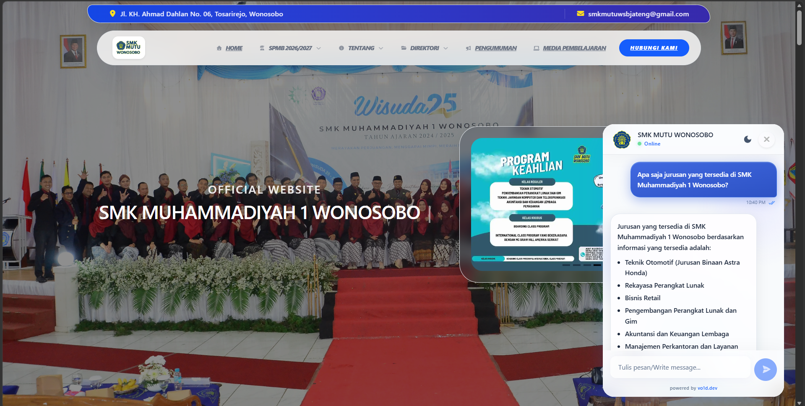
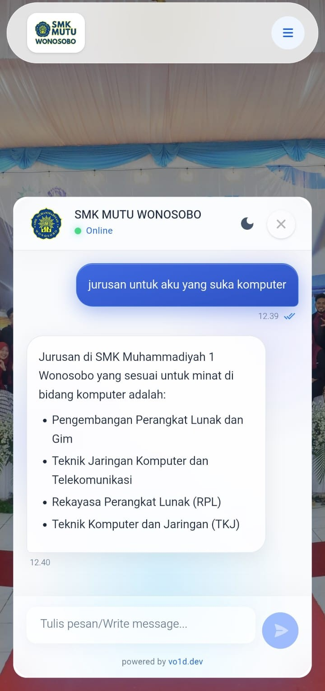

Teknik Informatika · 2026
Chatbot AI
Layanan Informasi SPMB
Pengembangan chatbot berbasis NLP dengan metode Retrieval-Augmented Generation (RAG) & Reciprocal Rank Fusion (RRF) · SMK Muhammadiyah 1 Wonosobo
Lonjakan pertanyaan SPMB tak terlayani di luar jam kerja.
- 1Volume tinggi, pertanyaan berulang: syarat, jadwal, biaya, jurusan.
- 27 saluran resmi, semuanya hanya aktif pada jam kerja.
- 3Jawaban tidak seragam antar petugas & saluran.
- 4Solusi: chatbot NLP yang aktif 24 jam, konsisten, berbasis dokumen resmi.
tahun 2025
terbatas jam kerja
layanan chatbot
pengetahuan resmi
Empat pertanyaan penelitian,
empat tujuan.
Rancang Arsitektur
Merancang arsitektur chatbot NLP yang mengintegrasikan RAG dan RRF untuk layanan informasi SPMB.
Kontribusi RRF
Mengukur kontribusi RRF bersama Query Expansion & cross-encoder reranking terhadap relevansi dokumen.
Integrasi Situs
Mengintegrasikan chatbot ke situs resmi sekolah agar dapat diakses tanpa terbatas jam kerja panitia.
Uji Performa
Mengukur performa melalui Black Box Testing dan evaluasi RAGAS: faithfulness, answer relevancy, context precision.
Landasan teori & posisi penelitian.
RAG
Memadukan LLM dengan pengambilan dokumen eksternal agar jawaban akurat dan minim halusinasi.
RRF
Menggabungkan beberapa daftar peringkat menjadi satu peringkat akhir via penjumlahan kebalikan rank.
Query Expansion
Membentuk variasi pertanyaan untuk mengatasi vocabulary mismatch dan memperluas cakupan dokumen.
Cross-Encoder
Reranking presisi tinggi pada kandidat dokumen memakai bge-reranker-v2-m3.
Gemini 3 Flash
LLM thinking, konteks 1 juta token, multibahasa (ID), sebagai penghasil jawaban.
RAGAS
Kerangka evaluasi otomatis: faithfulness, answer relevancy, context precision.
Posisi penelitian: Melanjutkan RAG pada layanan lokal (BPPKAD Wonosobo), ditambah RRF + Query Expansion + reranking pada domain SPMB kejuruan yang belum diteliti.
Pengembangan Prototype secara iteratif hingga memenuhi kualitas.
4 Metode
Studi pustaka, observasi, wawancara, dan dokumentasi via API request endpoint resmi sekolah.
44 Berkas Teks
42 hasil normalisasi API (10 kategori) + 2 hasil konsultasi pihak sekolah. Data tahun 2025.
Black Box + RAGAS
17 skenario fungsional & 10 pertanyaan uji dengan ground truth tervalidasi sekolah.
Pipeline RAG.
Naive RAG diperkuat tiga mekanisme retrieval: Query Expansion, Reciprocal Rank Fusion, dan cross-encoder reranking.
Weighted RRF dengan anchor query 4 : 1.
n = 3 daftar · k = 60 (penghalus) · w = bobot daftar. Pertanyaan asli sebagai jangkar (w=4,0), variasi sebagai penjelajah (w=1,0).
- ▪Rasio 4:1 menjaga kontribusi asli (4) tetap 2× total variasi (2×1): jangkar dominan tanpa menghilangkan variasi.
- ▪Skor mentah dinormalisasi ke rentang [0, 1] agar konsisten dengan modul relevansi.
Rasio 4:1 adalah satu-satunya konfigurasi dengan ketiga metrik tinggi tanpa ada yang anjlok.
Black Box Testing.
Tingkat keberhasilan fungsional pada Google Chrome, sistem versi produksi (Vercel + VPS).
Halaman Publik
Kirim pertanyaan, muat riwayat otomatis, mode gelap/terang.
Panel Admin
Analisis RRF, sumber dokumen, mode debug pipeline.
Manajemen Sesi
Chat baru, bersihkan chat, Session ID, auto-expire 24 jam.
Validasi
Input kosong, input ganda, kesiapan sistem backend.
Fungsional lolos, namun belum mengukur kualitas substansi jawaban → lanjut RAGAS.
Evaluasi RAGAS.
0,814 → 0,915
0,700 → 0,799
- ✓Faithfulness tetap "Sangat Baik" (0,981): jawaban tetap setia pada sumber, minim halusinasi.
- !Konsekuensi latensi: 2,83s → 12,07s. Penelitian memprioritaskan kualitas & relevansi jawaban.
Rata-rata 3× run · 10 pertanyaan uji · ground truth tervalidasi.
Chatbot aktif di smkmutuwsb.sch.id.


Arahkan kamera ponsel ke kode QR untuk membuka chatbot langsung pada situs resmi sekolah, aktif 24 jam melalui floating bubble.
Empat rumusan masalah terjawab.
- 1Arsitektur RAG + RRF berhasil dibangun: dua fase, 44 berkas, model Gemini 3 Flash.
- 2RRF berkontribusi positif: context precision 0,700 → 0,799 (+14,16%).
- 3Terintegrasi ke situs sekolah via floating bubble, akses 24 jam.
- 4Pengujian: Black Box 100%; RAGAS faithfulness 0,981 · ans. rel. 0,915 · ctx. prec. 0,799.
Kontribusi utama: Penerapan gabungan Query Expansion + RRF (4:1) + cross-encoder reranking meningkatkan relevansi jawaban chatbot layanan SPMB, dengan kesetiaan pada sumber tetap terjaga.
Arah pengembangan berikutnya.
Uji Ablasi
Nonaktifkan satu teknik dalam satu waktu untuk mengisolasi kontribusi tiap komponen retrieval.
Penilai Independen
Gunakan model penilai berbeda atau penilai manusia agar hasil RAGAS lebih objektif.
Optimasi Latensi
Akselerator GPU untuk embedding & reranker, caching retrieval, dan eksekusi lebih efisien.
Tuning Otomatis
Grid search / Bayesian optimization untuk rasio RRF dan parameter teknis lainnya.
Pembaruan Terjadwal
Sinkronisasi otomatis basis pengetahuan dengan data terbaru situs sekolah.
Dashboard Manajerial
Pantau riwayat percakapan & pertanyaan tersering sebagai bahan penyempurnaan.
Terima kasih.
Siap untuk sesi tanya jawab Dewan Penguji.
Chatbot AI berbasis NLP dengan RAG & RRF · SPMB SMK Muhammadiyah 1 Wonosobo.